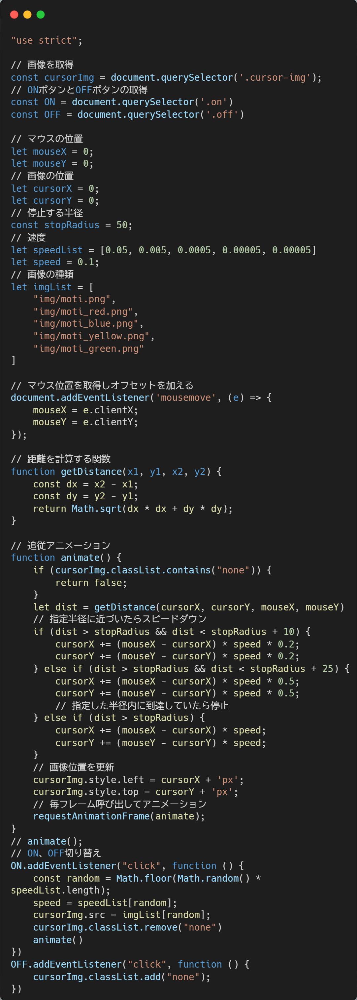

実装内容
画像のON/OFF切り替え機能と、ランダムで画像および追従速度が変化するインタラクションを実装しました。
画像がカーソルに対して遅れて追従するよう制御することで、より自然なアニメーション表現を実現しています。
さらに、状態に応じて不要な処理を停止する仕組みを取り入れ、動作の最適化も意識しました。
テーマを決めた背景
自分のポートフォリオにカーソルに合わせて何かがついてくるようなアニメーションを入れると面白いかなと思ったからです。
技術内容
-
＜JavaScript＞

課題点
画像がそのままついてくるだけなので、何かアニメーションなどを付たいです。